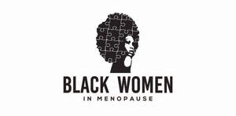

Trade Mark Journal No.2025/021 23 May 2025
UK00004188125 12 April 2025 (41,44)

- Class 41
- Health education; Education, teaching and training; Medical education services; Organisation of educational events; Organisation of cultural events; Organisation of educational seminars; Education services relating to health; Conducting seminars; Arranging and conducting of educational seminars; Provision of educational services relating to health; Provision of information relating to education; Provision of educational information; Provision of information relating to training; Information services relating to education; Education information services; Education and training; Education and training consultancy; Provision of training; Provision of education and training; Educational and training services; Arranging and conducting of educational discussion groups, not on-line; Arranging and conducting conferences; Arranging and conducting conferences and seminars; Arranging and presenting of live performances; Arranging and conducting of seminars; Arranging and conducting of in-person educational forums; Arranging, conducting and organization of seminars; Arranging and conducting of workshops and seminars; Arranging and conducting of training workshops; Educational seminars; Organisation of Webinars; Providing online training seminars; Arranging and conducting of seminars and workshops; Conducting educational support programmes for healthcare professionals; Conducting educational support programmes for patients; Educational and training services relating to healthcare; Educational consultancy services; Providing of education; Providing of training; Providing training; Providing information about education; Educational and entertainment services, namely, providing motivational speaking services; Providing of information relating to continuing education via the Internet.
- Class 44
- Health consultancy; Healthcare; Providing health information; Health advice and information services; Advisory services relating to health; Advisory services relating to health care; Health care; Information services relating to health care; Provision of health care services; Information relating to health; Provision of health information; Provision of medical information; Healthcare information services; Providing information relating to medical services; Provision of medical services; Consulting services relating to health care; Consultancy services relating to health care; Medical and healthcare clinics; Providing medical information; Charitable services, namely providing medical services; Providing health information via a website.
Nina Sophia Kuypers